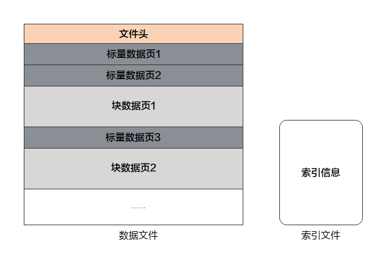

转换数据集为MindRecord
Linux Ascend GPU CPU 数据准备 中级 高级


概述
用户可以将非标准的数据集和常用的数据集转换为MindSpore数据格式，即MindRecord，从而方便地加载到MindSpore中进行训练。同时，MindSpore在部分场景做了性能优化，使用MindSpore数据格式可以获得更好的性能。
MindSpore数据格式具备的特征如下：
实现多变的用户数据统一存储、访问，训练数据读取更简便；
数据聚合存储，高效读取，且方便管理、移动；
高效数据编解码操作，对用户透明、无感知；
灵活控制分区大小，实现分布式训练。
MindSpore数据格式的目标是归一化用户的数据集，并进一步通过MindDataset实现数据的读取，并用于训练过程。
基本概念
一个MindRecord文件由数据文件和索引文件组成，且数据文件及索引文件暂不支持重命名操作：
数据文件
包含文件头、标量数据页、块数据页，用于存储用户归一化后的训练数据，且单个MindRecord文件建议小于20G，用户可将大数据集进行分片存储为多个MindRecord文件。
索引文件
包含基于标量数据（如图像Label、图像文件名等）生成的索引信息，用于方便的检索、统计数据集信息。

数据文件主要由以下几个关键部分组成：
文件头
文件头主要用来存储文件头大小、标量数据页大小、块数据页大小、Schema信息、索引字段、统计信息、文件分区信息、标量数据与块数据对应关系等，是MindRecord文件的元信息。
标量数据页
标量数据页主要用来存储整型、字符串、浮点型数据，如图像的Label、图像的文件名、图像的长宽等信息，即适合用标量来存储的信息会保存在这里。
块数据页
块数据页主要用来存储二进制串、NumPy数组等数据，如二进制图像文件本身、文本转换成的字典等。
将数据集转换为MindRecord
下面本教程将简单演示如何将图片数据及其标注转换为MindRecord格式。更多MindSpore数据格式转换说明，可参见编程指南中MindSpore数据格式转换章节。
导入文件写入工具类
FileWriter。from mindspore.mindrecord import FileWriter
定义数据集结构文件Schema。
cv_schema_json = {"file_name": {"type": "string"}, "label": {"type": "int32"}, "data": {"type": "bytes"}}
Schema文件主要包含字段名
name、字段数据类型type和字段各维度维数shape：字段名：字段的引用名称，可以包含字母、数字和下划线。
字段数据类型：包含int32、int64、float32、float64、string、bytes。
字段维数：一维数组用[-1]表示，更高维度可表示为[m, n, …]，其中m、n为各维度维数。
如果字段有属性
shape，则对应数据类型必须为int32、int64、float32、float64。如果字段有属性
shape，则用户传入write_raw_data接口的数据必须为numpy.ndarray类型。
按照用户定义的Schema格式，准备需要写入的数据列表，此处传入的是图片数据的二进制流。
data = [{"file_name": "1.jpg", "label": 0, "data": b"\x10c\xb3w\xa8\xee$o&<q\x8c\x8e(\xa2\x90\x90\x96\xbc\xb1\x1e\xd4QER\x13?\xff\xd9"}, {"file_name": "2.jpg", "label": 56, "data": b"\xe6\xda\xd1\xae\x07\xb8>\xd4\x00\xf8\x129\x15\xd9\xf2q\xc0\xa2\x91YFUO\x1dsE1\x1ep"}, {"file_name": "3.jpg", "label": 99, "data": b"\xaf\xafU<\xb8|6\xbd}\xc1\x99[\xeaj+\x8f\x84\xd3\xcc\xa0,i\xbb\xb9-\xcdz\xecp{T\xb1\xdb"}]
添加索引字段可以加速数据读取，该步骤非必选。
indexes = ["file_name", "label"]
创建
FileWriter对象，传入文件名及分片数量，然后添加Schema文件及索引，调用write_raw_data接口写入数据，最后调用commit接口生成本地数据文件。writer = FileWriter(file_name="test.mindrecord", shard_num=4) writer.add_schema(cv_schema_json, "test_schema") writer.add_index(indexes) writer.write_raw_data(data) writer.commit()
该示例会生成
test.mindrecord0、test.mindrecord0.db、test.mindrecord1、test.mindrecord1.db、test.mindrecord2、test.mindrecord2.db、test.mindrecord3、test.mindrecord3.db共8个文件，称为MindRecord数据集。test.mindrecord0和test.mindrecord0.db称为1个MindRecord文件，其中test.mindrecord0为数据文件，test.mindrecord0.db为索引文件。接口说明：
write_raw_data：将数据写入到内存之中。commit：将最终内存中的数据写入到磁盘。
如果需要在现有数据格式文件中增加新数据，可以调用
open_for_append接口打开已存在的数据文件，继续调用write_raw_data接口写入新数据，最后调用commit接口生成本地数据文件。writer = FileWriter.open_for_append("test.mindrecord0") writer.write_raw_data(data) writer.commit()
读取MindRecord数据集
下面将简单演示如何通过MindDataset读取MindRecord数据集。
导入读取类
MindDataset。import mindspore.dataset as ds
使用
MindDataset读取MindRecord数据集。data_set = ds.MindDataset(dataset_file="test.mindrecord0") # read full dataset count = 0 for item in data_set.create_dict_iterator(output_numpy=True): print("sample: {}".format(item)) count += 1 print("Got {} samples".format(count))
输出结果如下：
sample: {'data': array([175, 175, 85, 60, 184, 124, 54, 189, 125, 193, 153, 91, 234, 106, 43, 143, 132, 211, 204, 160, 44, 105, 187, 185, 45, 205, 122, 236, 112, 123, 84, 177, 219], dtype=uint8), 'file_name': array(b'3.jpg', dtype='|S5'), 'label': array(99, dtype=int32)} sample: {'data': array([230, 218, 209, 174, 7, 184, 62, 212, 0, 248, 18, 57, 21, 217, 242, 113, 192, 162, 145, 89, 70, 85, 79, 29, 115, 69, 49, 30, 112], dtype=uint8), 'file_name': array(b'2.jpg', dtype='|S5'), 'label': array(56, dtype=int32)} sample: {'data': array([ 16, 99, 179, 119, 168, 238, 36, 111, 38, 60, 113, 140, 142, 40, 162, 144, 144, 150, 188, 177, 30, 212, 81, 69, 82, 19, 63, 255, 217], dtype=uint8), 'file_name': array(b'1.jpg', dtype='|S5'), 'label': array(0, dtype=int32)} sample: {'data': array([ 16, 99, 179, 119, 168, 238, 36, 111, 38, 60, 113, 140, 142, 40, 162, 144, 144, 150, 188, 177, 30, 212, 81, 69, 82, 19, 63, 255, 217], dtype=uint8), 'file_name': array(b'1.jpg', dtype='|S5'), 'label': array(0, dtype=int32)} sample: {'data': array([175, 175, 85, 60, 184, 124, 54, 189, 125, 193, 153, 91, 234, 106, 43, 143, 132, 211, 204, 160, 44, 105, 187, 185, 45, 205, 122, 236, 112, 123, 84, 177, 219], dtype=uint8), 'file_name': array(b'3.jpg', dtype='|S5'), 'label': array(99, dtype=int32)} sample: {'data': array([230, 218, 209, 174, 7, 184, 62, 212, 0, 248, 18, 57, 21, 217, 242, 113, 192, 162, 145, 89, 70, 85, 79, 29, 115, 69, 49, 30, 112], dtype=uint8), 'file_name': array(b'2.jpg', dtype='|S5'), 'label': array(56, dtype=int32)} Got 6 samples